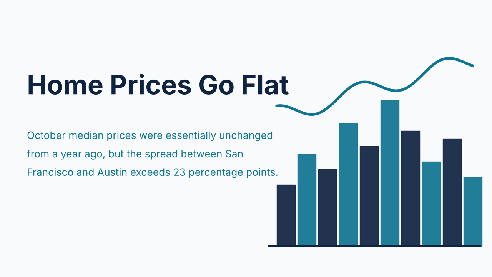
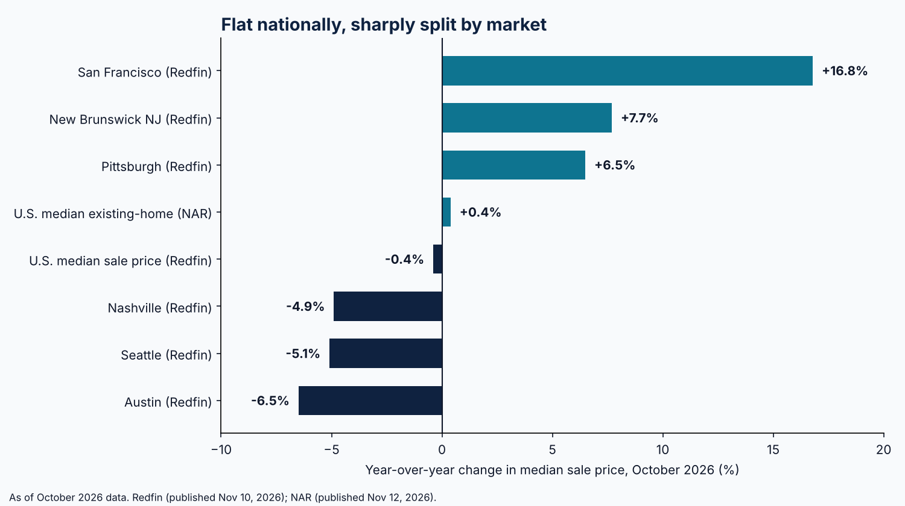

U.S. Home Prices Are Flat in October: Redfin Shows a 0.4% Decline While NAR Shows a 0.4% Gain

The two most widely cited measures of U.S. home prices disagreed on direction in October 2026, and the disagreement itself is the story. Redfin reported that the median home-sale price fell 0.4% year over year to $388,634, its first annual decline since May 2023. The National Association of Realtors reported that the median existing-home price rose 0.4% to $416,700, the 40th consecutive month of year-over-year gains. Both readings round to flat, and the two series use different methodologies and coverage, so investors should treat national prices as stalled rather than falling or rising.
Beneath the flat national figure, demand is weakening. NAR reported existing-home sales at a 3.75 million seasonally adjusted annual pace, down 5.5% from September and 8.8% from a year earlier, with inventory at 1.59 million units and 5.1 months of supply, up from 4.4 months a year ago. Redfin reported that pending sales fell 15.1% year over year, that active listings reached their highest level since early 2020, and that 61% of homes sold in October went for less than their original list price. Redfin also reported 36% of sold homes had at least one price cut, the highest share in its records, and a median of 50 days on market. NAR's separate measure of median time on market was 35 days, a reminder that the two organizations define the clock differently.

The regional dispersion is wide. In Redfin's October data for the 50 most populous metros, San Francisco prices rose 16.8% year over year, while Austin fell 6.5%, Seattle 5.1%, and Nashville 4.9%. NAR's regional medians show a similar split: the Northeast rose 3.2% to $519,600, the Midwest rose 1.5%, the South fell 0.4% to $360,900, and the West was unchanged at $624,300. A national average therefore says little about any single deal, and underwriting should rest on the specific submarket.
Financing costs keep pressure on the numbers. Freddie Mac's Primary Mortgage Market Survey put the 30-year fixed rate at 7.21% as of November 25, 2026, down from 7.28% the prior week but up from 6.23% a year earlier. Investors are still active: NAR reported that individual investors and second-home buyers made up 20% of October transactions, up from 16% a year earlier, and cash sales were 29% of transactions. With first-time buyers at 29% of sales, down from 32% a year earlier, investors and cash buyers represent a larger share of a thinner market.
The practical takeaway is to price each deal to its own market. Where Redfin shows sellers conceding below list in most sales, buyers have room to negotiate, and a lower purchase price changes loan-to-value and cash-to-close. Where prices are still rising, as in San Francisco, the inputs move the other way. Either way, the assessment should be rerun whenever price, rate, or rent assumptions change.